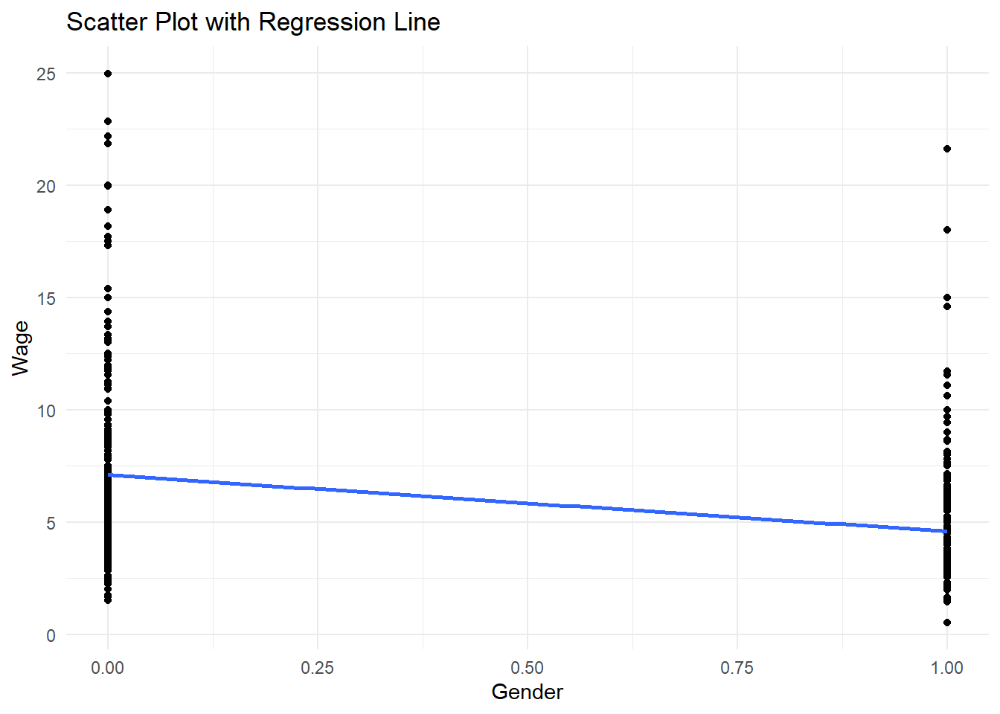
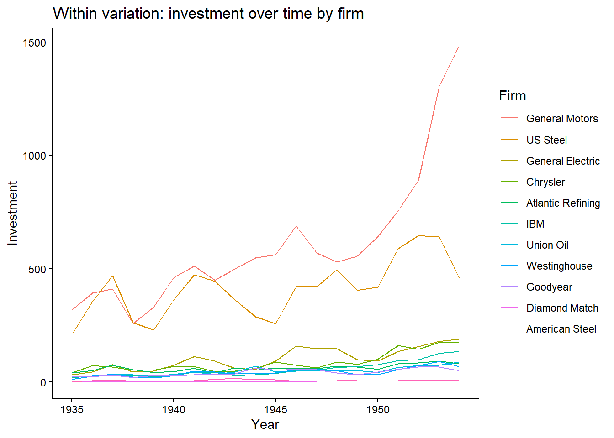
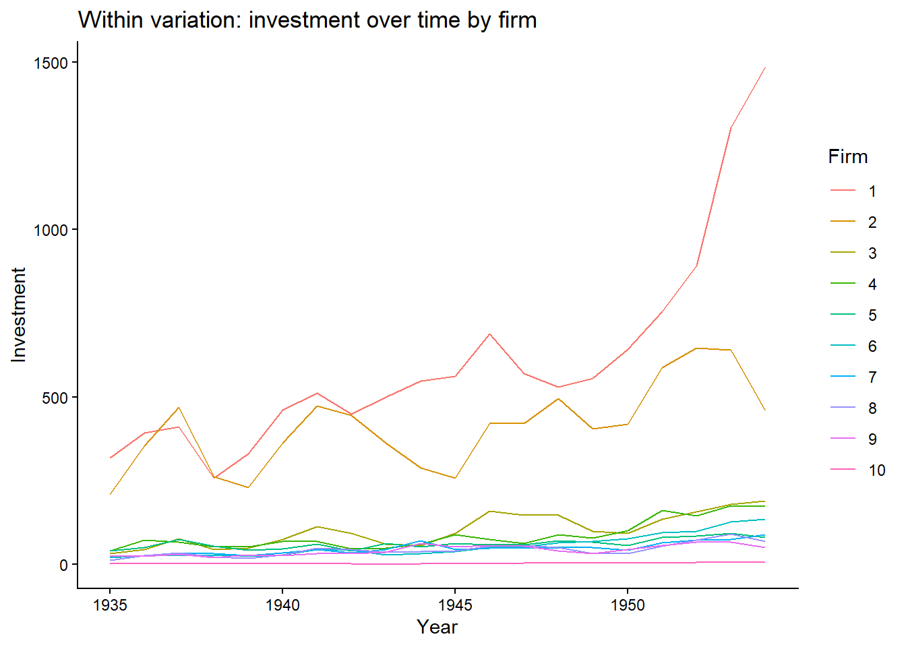
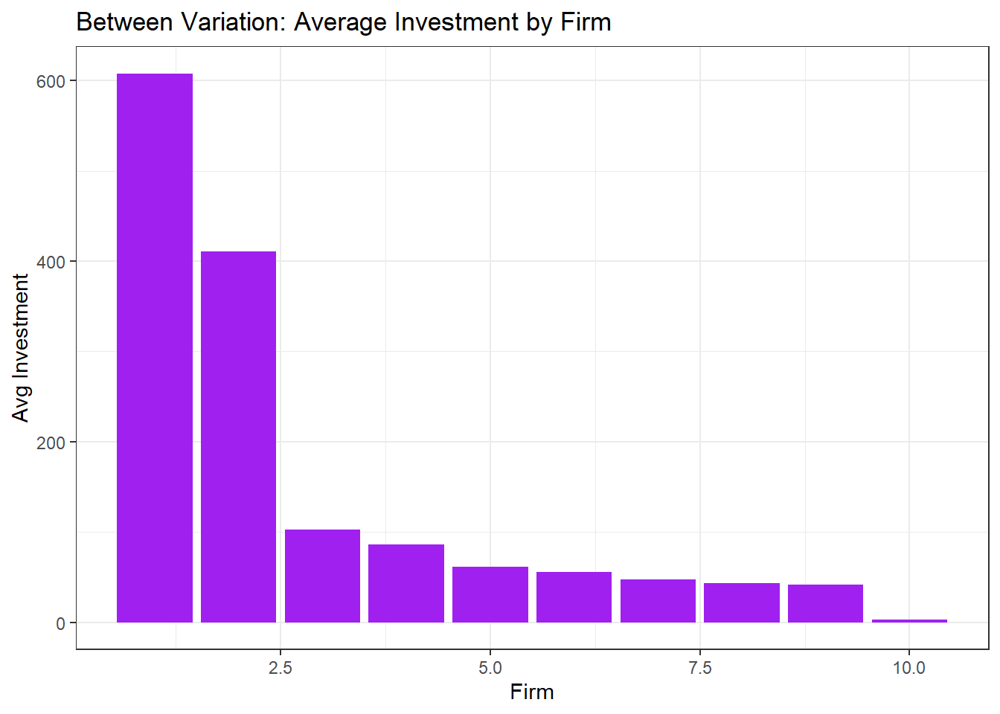

11 Descriptive Statistics Continuation
For this section, we use built-in datasets in R.
## used (Mb) gc trigger (Mb) max used (Mb)
## Ncells 4025400 215.0 7240020 386.7 7240020 386.7
## Vcells 8960036 68.4 111888721 853.7 218532577 1667.311.0.0.0.1 Built-in Datasets
The packages you download sometimes have datasets built-in them to serve as practice.
11.0.0.0.2 Install Packages
Some of the packages are already installed; but, just in case, they are included in the code chunk.
ch7p <- c(
"tidyverse",
"psych",
"plm",
"AER",
"lmtest",
"sandwich",
"forecast",
"wooldridge"
)
ch7mp <- ch7p[
!(ch7p %in% installed.packages()[,"Package"])
]
if(length(ch7mp)) {
install.packages(ch7mp)
}We list the packages we need, then, we locate the missing packages then install them. Finally, we load the libraries of the packages we installed. There will be a lot of warning messages when you install. Always double-check in the Packages list whether the packages were installed.
11.1 Time Series Descriptive Statistics
As a continuation, let us do a deep-dive of Descriptive Statistics focusing on time series data. In a time series, before you do any modeling, you need to understand the structure, trends and stationarity of the series.
11.1.0.1 Key Things to Look For:
Trend: Is the series increasing/decreasing over time?
Seasonality: Are there repeating patterns?
Volatility or Variance Changes: Look for periods of high/low variability.
Autocorrelation: Are observations correlated with past values?
The patterns inform whether simple OLS is valid or if we need to do transformations (e.g., differencing, logs)
11.1.0.1.1 Example:
We use the built-in AirPassengers dataset. This dataset is the monthly airline passenger numbers.
data("AirPassengers")
ch7.ts_data<-AirPassengers
ch7.ts <- data.frame(
Month = time(ch7.ts_data),
Air_Passengers = as.numeric(ch7.ts_data)
)The dataset is loaded through the data command. We are using tidyverse, it expects data frames so we have to change the object (now it is in Values) to data frame.
You notice that we extracted the time; it is because we are going to plot and detect trend and seasonality. We also have the number of Air Passengers per month so we set that as numeric.
11.1.1 1. Descriptive Statistics using psych
11.1.1.0.1 Use describe function
## vars n mean sd median trimmed mad min max range
## X1 1 144 280.3 119.97 265.5 271.45 133.43 104 622 518
## skew kurtosis se
## X1 0.57 -0.43 10We need to look at the data, whether it is skewed, highly volatile, or has unusual values. We look at Skewness aside from the central tendency measures.
If skewness is 1: it is highly skewed. In this case, it is moderately skewed. Usually, the rule of thumb for skewness interpretations is between -0.5 and 0.5 (roughly symmetric).
11.1.2 2. Plot Time Series
ggplot(ch7.ts,
aes(x=Month, y=Air_Passengers))+
geom_line(color="darkgreen")+
geom_smooth(method="loess", color="tomato") + #smooth trend line
labs(title = "AirPassengers with Smooth Trend Line", subtitle = "From 1949 to 1961")## Don't know how to automatically pick scale for object of type
## <ts>. Defaulting to continuous.
## `geom_smooth()` using formula = 'y ~ x'
Let us improve the graph;
ch7.ts<-ch7.ts %>%
mutate(
year = floor(Month),
month = round((Month - year)*12+1),
date = make_date(year=year, month = month, day = 1)
)We round off the Month to only have the year then, we convert the decimal to months by multiplying by 12 and add 1 because January counts as month 1. Unlike what we used before, as.Date, we use make_date because unlike character strings, this time, it is numeric.
11.1.2.0.0.1 Improved Plot
ggplot(ch7.ts,
aes(x=date, y=Air_Passengers))+
geom_line(color="darkgreen")+
geom_smooth(method="loess", color="tomato", se=FALSE) + #smooth trend line
scale_x_date(date_labels = "%Y", date_breaks = "1 year") +
labs(title = "AirPassengers with Trend Line", subtitle = "From 1949 to 1961",
x = "Year",
y = "Passengers")+
theme_classic()## `geom_smooth()` using formula = 'y ~ x'
#for base R plotting
fit <- loess(y ~ x)
ord <- order(x)
lines(x[ord], fitted(fit)[ord], col = "tomato", lwd = 2)geom_lineshows raw counts of Air Passengersgeom_smooth(method = "loess")fits a smooth curve to highlight trend, ignoring short-term fluctuations- LOESS is local regression wherein what happens is that, it can capture curves, trends and nonlinearity. It can be seen that the trend in Air Passengers accelerates then slows down. You can see peaks/troughs, therefore, LOESS is better over linear regression.
scale_x_dateis just to show every year, not just some years in x-axis. You can add months here by putting inside the parenthesis,%bbut it looks cluttered so I did not put it.
11.1.3 3. Autocorrelation
Detect if observations are correlated over time, which violates OLS independence assumption.


How to Interpret:
| Plot | Significant? | Implication for OLS/modeling |
|---|---|---|
| ACF | Spike outside blue dashed lines | Residuals may be autocorrelated so this violates OLS independence assumption |
| PACF | Spike outside blue dashed lines | Direct lagged effect so we may need to lag regressors in OLS |
| Multiple PACF Lags | Multiple spikes beyond bounds | OLS residuals are correlated so we have to consider other models like ARIMA, dynamic regression or IV |
In summary, Spikes in PACF of residuals -> OLS standard errors may be invalid so, need to lag variables or do IV.
11.2 Panel Data: Within vs Between Variation
You might wonder why we have the within vs between variation; Note the following:
Within:
Variation of an individual over time
Example: NCR GDP changes from year to year
Useful when estimating fixed-effects models because we want to isolate how changes within an individual/entity affect the dependent variable
Between:
Variation across individuals over time
Example: Average GDP differs across NCR, CAR, BARMM
Useful when estimating random-effects models or when comparing differences across individuals/entities
Note: If you ignore within vs between variation, OLS estimates will be biased.
Fixed-effects OLS = controls for unobserved, time-invariant heterogeneity so uses within variation only.What is time-invariant heterogeneity? A constant, hidden characteristic of entities in panel data that do not change over time.
11.2.0.0.1 Example:
We use the Grunfeld Dataset which is built-in the plm package that is used for Panel Data modeling
11.2.0.0.2 Inspect data
## 'data.frame': 200 obs. of 5 variables:
## $ firm : int 1 1 1 1 1 1 1 1 1 1 ...
## $ year : int 1935 1936 1937 1938 1939 1940 1941 1942 1943 1944 ...
## $ inv : num 318 392 411 258 331 ...
## $ value : num 3078 4662 5387 2792 4313 ...
## $ capital: num 2.8 52.6 156.9 209.2 203.4 ...11.2.0.1 1. Plot Panel Data
11.2.0.1.1 a. Within variation: investment over time per firm
ggplot(Grunfeld,
aes(x=year, y=inv, group=firm, color=factor(firm)))+
geom_line()+
labs(title="Within variation: investment over time by firm", x="Year", y="Investment", color = "Firm")+
theme_classic()
- Some firms show large changes but most of them show little variation. For these firms, it shows changes within the firm but for the others, not really.
11.2.0.1.2 b. Between variation
Grunfeld %>%
group_by(firm) %>%
summarise(mean_invest = mean(inv)) %>%
ggplot(aes(x=firm, y=mean_invest)) +
geom_col(fill="purple") +
labs(title="Between Variation: Average Investment by Firm", x="Firm", y="Avg Investment")+
theme_bw()
- Shows how firms 1 and 2 have much higher average investment than the others. Unlike before, the between variation here looks at differences in average across firms, ignoring time.
Important: Choosing the right model (FE vs RE) depends on whether your research question is about changes within entities or differences across entities.